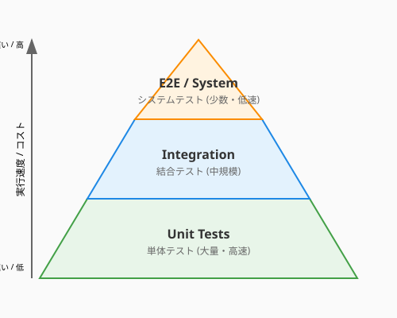
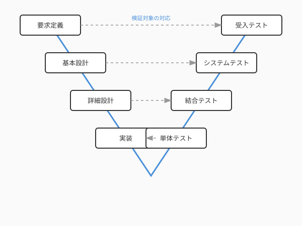

第3章で、あなたはコードを実装する技法を学びました。しかし、どれほど丁寧に書いたコードも、明日の変更で壊れないという保証はありません。コードを守り続けるには——それを安心して変え続けるには——テストという守護魔法が必要です。
ここで一つ、心に刻んでおいてほしいことがあります。「仕様書に書かれている手順をなぞって実行してみるだけでは、それはまだ真の『テスト』とは呼べません」。
テストとは、単なる「動作確認」ではなく、システムの「脆さ」や「境界線」を積極的に探し出し、意図的に壊そうとする試み——いわば、コードに対する厳格な「鑑定」なのです。AIが瞬時にコードを生成する現代において、そのコードが本当に信頼に値するかを見抜くあなたの鑑定眼こそが、品質の最後の砦となります。
何を、どの粒度で、どうテストするのか——この問いに答える地図こそが、守護魔法の出発点です。地図なき軍団は烏合の衆。地図を持った軍団は無敵です。
テストには「どの範囲を検証するか」に応じたレベルがあります。小さい範囲から大きい範囲へ、4つの防衛圏として整理できます。
| レベル | 検証対象 | 誰が担当するか | 速度 |
|---|---|---|---|
| 単体テスト（Unit Test） | 関数・メソッド単体 | 開発者 | 非常に速い |
| 結合テスト（Integration Test） | 複数のコンポーネントの連携 | 開発者 | やや遅い |
| システムテスト（System Test） | システム全体の動作 | QAチーム / 開発者 | 遅い |
| 受入テスト（Acceptance Test） | ユーザーの要求を満たしているか | 顧客 / プロダクトオーナー | 遅い |
最も小さな粒度のテストです。一つの関数やメソッドが、期待通りに動くかを確認します。
# QuestForge: 経験値計算の単体テスト
import unittest
class TestXpCalculation(unittest.TestCase):
def test_hard_quest_gives_double_xp_for_low_level_hero(self):
quest = Quest(title="Dragon Slayer", difficulty="HARD", base_xp=100,
recommended_level=10)
hero = Hero(name="Aria", level=3)
result = calculate_quest_xp(quest, hero)
self.assertEqual(result, 200) # 100 * 2.0
def test_normal_quest_gives_base_xp(self):
quest = Quest(title="Herb Gathering", difficulty="NORMAL", base_xp=50,
recommended_level=1)
hero = Hero(name="Aria", level=5)
result = calculate_quest_xp(quest, hero)
self.assertEqual(result, 50)単体テストは数ミリ秒で完了し、何百回でも気軽に実行できます。これが守護魔法の最前線です。
個々の関数が正しく動いても、それらを組み合わせた途端に問題が起きることがあります。結合テストは、複数のコンポーネントが正しく連携できるかを検証し、「関数単体は正しいのに、組み合わせると動かない」という状況を防ぎます。
# QuestForge: ユースケース + リポジトリの結合テスト
class TestCompleteQuestIntegration(unittest.TestCase):
def test_completing_quest_updates_hero_xp(self):
# 実際のリポジトリ（インメモリ実装）を使う
quest_repo = InMemoryQuestRepository()
hero_repo = InMemoryHeroRepository()
quest = Quest(title="Forest Patrol", difficulty="NORMAL", base_xp=80,
recommended_level=1)
hero = Hero(name="Kai", level=5)
quest_repo.save(quest)
hero_repo.save(hero)
use_case = CompleteQuestUseCase(quest_repo, hero_repo)
use_case.execute(quest.id, hero.id)
updated_hero = hero_repo.find_by_id(hero.id)
self.assertEqual(updated_hero.xp, 80)結合テストは、コンポーネント間の「連携の摩擦」を早期に発見するための重要な層です。
さらに外側——システム全体とユーザーの要求の視点まで広げると、より大きな粒度での検証が見えてきます。システムテストと受入テストはシステム全体を通して、ユーザーの視点で「仕様通りに動くか」を検証します。受入テストは、第1章で定義した要求やユースケースが満たされているかを確認するテストでもあります。要求の定義（1章）からテストの検証（4章）まで、本書全体が一つの開発サイクルとして繋がっています。
テストレベルごとに「どれくらいの数を書くべきか」を示したのがテストピラミッドです。
次の図は、テストピラミッドの形状と各層の特徴を示しています。

ここで注目したいのは「ピラミッド」という形そのものです。下層（単体テスト）が最も幅広く、上層（E2E・システムテスト）が頂点へと細くなっています。この形が崩れて逆三角形（上層ばかり多い）になると、テストの実行時間が増大し、原因の特定にも手間がかかるようになります。
| 層 | 特徴 | 目安 |
|---|---|---|
| 上層（E2E / System） | 遅い・壊れやすいが、ユーザー体験を直接検証 | 全体の10〜20% |
| 中層（Integration） | コンポーネント連携の整合性を確認 | 全体の20〜30% |
| 下層（Unit） | 速い・安定・大量に書ける | 全体の50〜70% |
ピラミッドの形が逆さま（上層ばかり多い）になると、テストの実行に時間がかかり、原因の特定にも手間が増えます。土台（単体テスト）を厚く、頂点（E2E）は薄くが、効率的な軍団編成の原則です。
ソフトウェアエンジニアリングには、開発の各工程と対応するテストレベルを示すV字モデルという考え方があります。
次の図は、V字モデルにおける開発工程とテストレベルの対応関係を示しています。

左側で「何を作るか」を決め、右側で「正しく作れたか」を検証します。
V字の同じ高さにある工程とテストが対応しているのがポイントです。
単体テストで「データベースに保存する処理」をテストしたいとき、本物のデータベースを用意するのは大変です。そこで使うのがテストダブル（Test Double）——本物の代わりに使う「影武者」です。
| 種類 | 役割 | 用途 |
|---|---|---|
| スタブ（Stub） | 固定値を返す替え玉 | 「リポジトリから常にこのデータを返す」 |
| モック（Mock） | 呼び出されたかを検証する替え玉 | 「save()が1回呼ばれたことを確認する」 |
| スパイ（Spy） | 本物の処理を実行しつつ記録する | 「実際に動かし、呼び出し回数も数える」 |
# スタブの例: 常に特定のクエストを返すリポジトリ
class StubQuestRepository:
def find_by_id(self, quest_id: str) -> Quest:
return Quest(title="Stub Quest", difficulty="NORMAL",
base_xp=100, recommended_level=1)
# モックの例: save()が呼ばれたかを検証
from unittest.mock import MagicMock
def test_complete_quest_saves_result():
mock_repo = MagicMock()
quest = Quest(title="Test", difficulty="NORMAL", base_xp=50,
recommended_level=1)
mock_repo.find_by_id.return_value = quest
use_case = CompleteQuestUseCase(mock_repo, hero_repo)
use_case.execute(quest.id, hero.id)
mock_repo.save.assert_called_once() # save()が1回呼ばれたことを確認テストダブルを使うことで、データベースやネットワークなどの外部依存を切り離し、高速で安定した単体テストが書けます。第2章で学んだ「依存性の逆転（DIP）」が、ここで実践的に活きてきます。インターフェース（抽象）に依存する設計だからこそ、本物と影武者を自在に差し替えられるのです。
テストは4つのレベルで構成された体系です。単体→結合→システム→受入という段階それぞれが異なる粒度でコードの正しさを保証し、テストピラミッドはその量のバランスを示す指針となります。土台となる単体テストを厚く積み重ね、E2Eテストは厳選する——このバランスが、高速で安定したテストスイートを実現します。
V字モデルによって開発工程とテストを対応づけることで、「この実装に対応するテストはどの段階にあるか」という視点が生まれます。そして、外部依存を切り離すテストダブルの技法は、第2章で学んだ依存性逆転の原則（DIP）が実践として活きる場面でもあります。
次の4.2節では、「何をテストすれば十分か」という鑑定術の問いに向き合います。カバレッジや同値分割・境界値分析といった体系的な技法を使って、テストの質と量を最大化する方法を学んでいきましょう。
前提: 現代のコーディングエージェントはプロジェクトのファイルを自動参照します。 IDE統合型は
@ファイル名で対象を絞り、CLI型（Claude Code等）はパス指定や自動走査で対応します。[コードを貼り付け]という操作は不要です。
@application/use_cases/complete_quest.py を読んで、
単体テストを pytest 形式で書いてください。
- 外部依存（QuestRepository）は unittest.mock でモックに差し替えること
- 以下のケースを必ずカバーすること：
1. 正常系: クエスト完了時に経験値が加算される
2. 異常系: 存在しないクエストIDを指定した場合
3. 異常系: すでに完了済みのクエストを再完了しようとした場合
- @domain/quest.py の Quest クラスの仕様にも準拠することtests/ ディレクトリ全体を走査して、現在のテストピラミッドを分析してください。
出力：
1. 単体テスト・結合テスト・E2Eテストそれぞれの件数と比率
2. 理想的なピラミッド構成との差異
3. 最優先で補強すべき層とその理由
分析後、最も手薄な層に追加すべきテストを3件提案し、
コードも合わせて生成してください。執筆メモ: